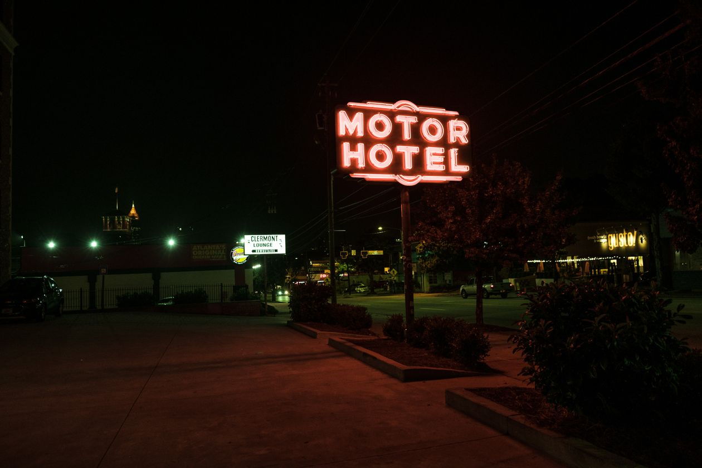

The index is the first page, because the index is the work
Every sign in this index was somebody's landmark.
This is the register of an archive that rescues, restores and documents historic neon signs — for museums, councils, collectors and the businesses still trading under them. Saved signs, signs on the bench, and signs that were lost are all entered here, in the same hand. An index that only lists the survivors is a brochure, not an archive.
The Index — current page
Fourteen entries, in accession order. Dates are given as ranges where the records are thin, and makers are marked “not recorded” rather than invented.
Showing 14 of 14 entries — all fates.
The lost five on this page: two demolished, one sold abroad, one lost to fire, one taken down and never traced. Their entries stay open. The full index holds 214 signs; this page is the current one.
The bench, on paper
Every rescue starts with the same two questions: how much of the original glass will survive, and what will the work cost? Both are answered from the tables printed here — the tools below read these tables, not a hidden formula.
The Rescue Assessment
The assessment grades a sign before anyone touches it. The grade is set at survey, from the state of the glass, the electrodes and the cabinet — and the grade decides what honesty allows.
Table A — Condition grades
| Grade | State of the sign | Original tube expected to survive | Bench hours per letter |
|---|---|---|---|
| 1 · Sound | Lights fully; glass clear, gas clean | 85% | 2 h |
| 2 · Weathered | Sections dim or out; glass sound | 65% | 3 h |
| 3 · Failing | Several sections out; electrodes tired | 40% | 5 h |
| 4 · Derelict | Glass broken or missing; cabinet rotten | 10% | — beyond tube rescue |
Table B — Sign classes
| Class | Tube per letter | Access & transport |
|---|---|---|
| Fascia / shopfront letters | 3 m | Street level — no access plant; van and two crew |
| Exposed script on a frame | 4 m | MEWP (cherry picker), 1 day |
| Rooftop / parapet letters | 6 m | Scaffold tower, 2 days |
Table C — When the glass cannot be saved
| Option | What it is | Bench time |
|---|---|---|
| Document & rest | Full photographic record, pattern rubbing and measured drawing; the sign then rests as it is | 8 h, flat |
| Document & remake | The record, plus new tube bent to the original pattern — stamped and dated, and entered in the index as a remake | 8 h + 6 h per letter |
The booking estimator
Rescue work is priced from a printed rate card. The estimator applies the card exactly as printed; the survey then fixes the figure.
Rate card — printed
| Line | Rate |
|---|---|
| Survey & written condition report | £350 per sign |
| Bench restoration | £160 per letter |
| Replacement tube, bent & filled | £95 per metre |
| Access plant | £220 per day |
| Return, re-hang & test at dusk | £180 per sign |
Services, entered like signs
Three kinds of work, each with its example from the index and the state of the bench.
Rescue restoration
- For
- Councils, trusts, museums, and owners of standing signs
- Example
- NR-001, Regal Cinema — Grade 3 at survey; 46% of its letter glass kept, starburst whole
- Original glass
- Stated per sign before work begins; 68% retained across all rescues to date
- Bench state
- Two places this winter. Grades 1–3 only — a Grade 4 sign goes to documentation first
Documentation & recording
- For
- Owners facing demolition, sale or redevelopment
- Example
- NR-014, Blue Boar Hotel — recorded in eleven days, spring 2019
- The record
- Dusk photographs lit and unlit, pattern rubbings, measured drawing, gas and glass notes
- Who keeps it
- The owner keeps the originals. The archive keeps a copy, and the index entry
Museum loans & care
- For
- Museums and collections holding signs
- Example
- NR-104, the Seagull gull — on loan 2024–26, inspected each spring
- Care
- Annual inspection; electrode and transformer schedule; re-pump when the record says so
- Original glass
- Loans travel crated in tube order, with their condition report on top
What moves the price
The shape of every bill, before any figures: four things, in this order.
- Condition grade, first. A Grade 3 letter takes five bench hours against a Grade 1 letter's two. The grade is set at survey and printed in the report — it is most of the bill, and it is not negotiable after the fact.
- Access, second. A scaffold tower for two days costs more than the glass it is there to reach. A shopfront sign needs a van and two people, and its bill says so.
- Tube metres, third. Replacement glass is priced by the metre from the printed rate card — never by the fame of the sign.
- The survey is £350, fixed. It is not deducted from the bill and it is not hidden inside it. It buys the written condition report whether or not the rescue goes ahead.
The record, counted
214
Signs indexed since 1998
96
Rescued & returned to their buildings
71
Documented & lost — recorded before the end
68%
Original glass retained across all rescues
The remaining 47 entries await their owners' decisions, or are recorded from photographs alone. A sign the archive could not reach in time is still indexed.
“He told us which letters would not survive before he touched a single tube, and he was right to the metre. The Regal has lit the high street every night since.”

Know a sign that is about to come down?
Demolition notices, sales and skip hire are the archive's deadlines. A sign reported early can usually be recorded; a sign reported late is an index entry with a photograph of a wall.
Report a sign